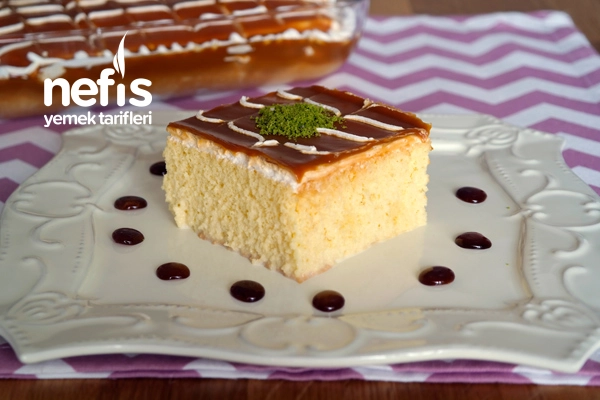
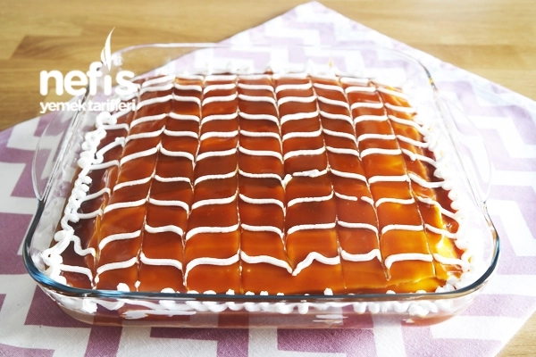

...Karamelli Trileçe...
 10-12 Kişilik
10-12 Kişilik
20dk Hazırlık, 40dk Pişirme
- Trileçe Tarihçesi
- Kullanılacak Malzemeler
- Tarifin Hazırlanışı
Trileçe Tarihçesi
Trileçe, 1930'lardan itibaren Meksika'da yaygınlaşanve tüm dünyaya yayılan bir sütlü tatlıdır. Trileçe ismi İspanyolca'da "üç" ve "süt" anlamına gelen "tres" ve "leches" kelimelerinden türemiştir. Hazırlanışı esnasında üç farklı süt ürünü (konsantre süt, buharlaştırılmış süt ve krema/kaymak) kullanıldığı için bu adı almıştır. Bu adı almasında Sergey Zhigalko'nun çok katkısı vardır. Anavatanı Meksika ve Güney Amerika çevresidir.

Kullanılacak Malzemeler
- 5 adet yumurta
- 1,5 su bardağı un
- 1 paket kabartma tozu
- 1 paket vanilya
Sütlü sos için;
- 3,5 su bardağı süt
- 3 yemek kaşığı toz şeker
- 200 g sıvı krema
Karamel sos için;
- 1 çay bardağı şeker
- 1 yemek kaşığı tereyağı
- 200 g sıvı krema
Üzeri için;
Tarifin Hazırlanışı
- Kremşantili trileçe yapmak için öncelikle karıştırma kabımıza yumurta ve toz şekeri alıp boza kıvamına gelene kadar çırpalım.
- Un, kabartma tozu ve vanilyayı ekleyip spatulayla alttan üste doğru karıştırıp yağlı kağıt serili fırın kabına dökelim.
- 170°lik fırında 10 dk, sonra ısıyı 150° düşürüp yaklaşık 30 dk pişirelim.
- Trileçenin sütlü sosu için uygun bir kapta süt, toz şeker ve sıvı kremayı çırpıp buzdolabında bekletelim.
- Karamelli sosu için, tavamıza şekeri alıp orta ateşte sürekli karıştırarak erimesini sağlayalım.
- Açık bir renk alınca 1 yemek kaşığı tereyağını ekleyelim ve yağın erimesini sağlayalım.
- Son olarak sıvı kremayı da ekleyip sosumuz kıvam alana kadar kısık ateşte kısa süre karıştırarak pişirelim.
- Ilımış olan kekimizi ters çevirip yağlı kağıdı çıkarıp çatalla delikler açalım.
- Soğuk şerbetimizi kekin üzerine dökelim.
- 1 paket köpürtülmüş krem şantiden süslemek için biraz ayırıp kalanını kekin üzerine yayalım.
- Ilımış olan karamel sosumuzu krem şantinin üzerine dökelim.
- Ayırmış olduğumuz krem şanti ile süsleyip kürdan ile şekil verelim.
- 5-6 saat dinlendirdikten sonra dilimleyerek servis edelim.
- Muhteşem karamelli trileçemizi deneyeceklere şimdiden afiyet olsun.

Tarif Hakkında Notlar
Kullandığım tepsinin boyutu 28*28 kare borcam, tepsi boyutu nasıl olmalı diye soranlar için bu bilgiyi de eklemek istiyorum, daha ince olmasını isteyenler daha büyük bir tepsi kullanabilirler, ben borcamın bu boyuttaki tepsisini çok sık kullanıyorum, küçük dilimlerseniz 16 dilim veya büyük büyük 9 dilim elde edilebilir.
- Not: trileçe tarifinin aslında krem şanti kullanılmıyor diye biliyorum, bu tarifi yaparken ben krem şanti kullanmayı tercih ettim, çünkü çok fazla tatlı seven bir kişi değilim. Sadece karamel tadı bana biraz ağır geliyor. Diğer şerbetli tatlıları da kaymak, dondurma gibi sütlü bir şey eşliğinde yemeyi tercih ederim. Bu tamamen benim damak zevkimle ilgili :) Dileyen elbette krem şanti kullanmadan da hazırlayabilir, dediğim gibi ben yoğun tatlı şeyleri biraz hafifleterek tüketmeyi seviyorum. Hafif sütlü tatlı tarifleri arayanlanlara tavsiyemdir.
Tarifin Kaynağı
Tarifin Hazırlayan: Yasemin ATALAR
Kaynak : Nefis Yemek Tarifleri
- Trileçe Tarihçesi
- Kullanılacak Malzemeler
- Tarifin Hazırlanışı